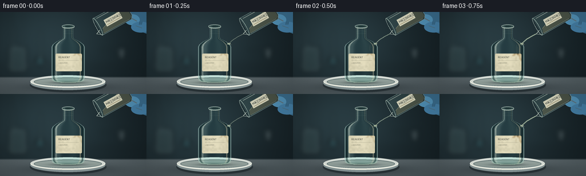

CODING AGENTS AS PIXEL WORLD MODELS
traex/GPT-6.1-Sol · material_0039
点击播放 · 原生 RGB 像素
逐轮保存的候选
回放视频、检查图与代码变化。
每份候选均可单独播放。实际图片检查记录在下方工具轨迹中。
候选 01播放与检查图
点击播放 · 原生 RGB 像素


展开代码变化
--- 上一保存版本
+++ 本次保存版本
@@ -0,0 +1,294 @@
+from pathlib import Path
+import math
+import numpy as np
+from PIL import Image, ImageDraw, ImageFilter, ImageFont
+import artifact_io
+
+# Analytic, supersampled scene. No external imagery or rendering assets.
+ROOT = Path(__file__).resolve().parent
+W,H,S = 256,144,4
+WW,HH=W*S,H*S
+Y,X=np.mgrid[0:HH,0:WW].astype(np.float32)/S
+rng=np.random.default_rng(214)
+
+def noise_field(seed, scale=6):
+ rr=np.random.default_rng(seed)
+ a=rr.random((max(3,HH//scale//S), max(3,WW//scale//S))).astype(np.float32)
+ im=Image.fromarray((a*255).astype('uint8')).resize((WW,HH),Image.Resampling.BICUBIC)
+ return np.asarray(im).astype(np.float32)/255
+N=noise_field(57,3)
+N2=noise_field(17,10)
+grain=rng.normal(0,1,(HH,WW)).astype(np.float32)
+
+def layer(): return Image.new('RGBA',(WW,HH),(0,0,0,0))
+def ellipse(d,box,fill,outline=None,width=1):
+ d.ellipse(tuple(int(v*S) for v in box),fill=fill,outline=outline,width=max(1,int(width*S)))
+def line(d,pts,fill,width=1):
+ d.line([(int(a*S),int(b*S)) for a,b in pts],fill=fill,width=max(1,int(width*S)),joint='curve')
+def poly(d,pts,fill): d.polygon([(round(a*S),round(b*S)) for a,b in pts], fill=fill)
+def comp(arr, color, alpha):
+ if np.ndim(alpha)==2: alpha=alpha[...,None]
+ return arr*(1-alpha)+np.asarray(color)*alpha
+
+def font(size):
+ try: return ImageFont.truetype('/usr/share/fonts/truetype/dejavu/DejaVuSans.ttf',round(size*S))
+ except: return ImageFont.load_default()
+
+# Dark defocused laboratory, warm sidelight, stainless-steel work surface.
+glow=np.exp(-((X-82)/125)**2-((Y-47)/97)**2)
+bg=np.empty((HH,WW,3),np.float32)
+for c,(a,b) in enumerate([(19,23),(29,32),(33,34)]): bg[...,c]=a+b*glow
+back=layer(); d=ImageDraw.Draw(back)
+d.rectangle((0,0,WW,int(115*S)),fill=(0,0,0,0))
+# Background shelf, a cool lab rack and out-of-focus glassware.
+line(d,[(0,94),(256,94)],(117,135,139,72),2)
+line(d,[(19,2),(19,96)],(124,143,147,58),3)
+line(d,[(41,2),(41,96)],(120,147,151,38),2)
+d.rounded_rectangle((15*S,62*S,47*S,106*S),radius=4*S,fill=(63,84,85,85),outline=(163,184,184,80),width=2*S)
+ellipse(d,(20,59,41,65),(89,111,114,88))
+line(d,[(27,29),(27,64)],(148,183,185,67),2)
+ellipse(d,(62,78,78,95),(43,84,91,120))
+line(d,[(71,32),(71,82)],(168,200,199,55),3)
+line(d,[(174,65),(224,65)],(80,117,126,60),2)
+ellipse(d,(206,61,219,84),(172,188,189,60))
+back=back.filter(ImageFilter.GaussianBlur(4.5*S))
+ba=np.asarray(back).astype(float); bg=comp(bg,ba[...,:3],ba[...,3]/255)
+# Worktop with brushed fine streaks and depth gradient.
+table=np.clip((Y-113)/3,0,1)
+tab=np.zeros_like(bg)
+for c,v in enumerate((80,91,95)): tab[...,c]=v+10*np.exp(-((X-117)/106)**2)-.39*(Y-116)
+tab+= (.7*grain+1.0*np.sin(Y*4.3))[...,None]
+bg=comp(bg,tab,table*.99)
+# Soft contact shadows for the tray.
+shadow=np.exp(-((X-121)/70)**2-((Y-132)/8)**2)*.44
+bg=comp(bg,[8,15,19],shadow)
+# A shallow off-white chemical catch dish, with molded rim.
+tray=layer(); d=ImageDraw.Draw(tray)
+ellipse(d,(52,115,186,141),(22,32,36,140))
+ellipse(d,(53,113,184,137),(134,149,150,255))
+ellipse(d,(53,111,184,133),(218,224,217,255))
+ellipse(d,(59,115,178,130),(91,111,112,255))
+ellipse(d,(60,116,177,129),(148,162,157,255))
+d.arc((53*S,111*S,184*S,133*S),0,180,fill=(244,246,233,255),width=2*S)
+d.arc((59*S,115*S,178*S,130*S),180,355,fill=(75,95,97,255),width=S)
+tr=np.asarray(tray).astype(float); bg=comp(bg,tr[...,:3],tr[...,3]/255)
+# Bottle contact shadow.
+bg=comp(bg,[17,30,30],.56*np.exp(-((X-119)/28)**2-((Y-124)/2.4)**2))
+
+# Lathed bottle profile in image space: empty flint glass with long neck.
+cy=np.array([23,28,44,47,52,57,61,111,117,122,124],float)
+cr=np.array([10,8.6,8.6,10,20.5,27,29,29,28.5,24,16],float)
+radius=np.interp(Y,cy,cr)
+CX=119
+U=(X-CX)/np.maximum(radius,1)
+bottle=((Y>=24)&(Y<=124)&(np.abs(U)<=1)).astype(np.float32)
+# Rounded paper label mask.
+labelim=Image.new('L',(WW,HH)); ld=ImageDraw.Draw(labelim)
+ld.rounded_rectangle((97*S,73*S,143*S,104*S),radius=2*S,fill=255)
+LM=np.asarray(labelim).astype(np.float32)/255
+# Print on original label, drawn at full optical resolution.
+printim=layer(); pd=ImageDraw.Draw(printim)
+pd.text((102*S,77*S),'REAGENT',font=font(4.3),fill=(46,52,47,230))
+line(pd,[(102,85),(138,85)],(75,78,64,135),.28)
+pd.text((102*S,88*S),'LABORATORY',font=font(2.6),fill=(78,80,68,160))
+for k in range(3): line(pd,[(102,95+k*2),(131-k*4,95+k*2)],(108,108,85,110),.25)
+pa=np.asarray(printim).astype(np.float32)
+# Fixed droplets, carbony pinholes, and tiny char flake cracks.
+marks=[]
+for k in range(190):
+ marks.append((rng.uniform(98,142),rng.uniform(75,103),rng.uniform(.12,.55),rng.random()))
+
+
+def glass_scene(fi):
+ t=fi/19
+ a=bg.copy()
+ # Refraction shifts the visible background horizontally within the thick sides.
+ lookup=np.clip(np.rint((X+4.0*U*(1-U*U))*S).astype(int),0,WW-1)
+ refr=bg[np.arange(HH)[:,None],lookup]
+ trans=np.clip(.03+.12*np.abs(U)**5,0,.25)*bottle
+ a=comp(a,refr*np.array([.91,1.03,1.025]),bottle*.86)
+ a=comp(a,[40,80,78],trans)
+ # Outer Fresnel edges and reflected tall softbox lights.
+ edge=np.exp(-((np.abs(U)-.973)/.026)**2)*bottle
+ a=comp(a,[191,218,210],edge*.63)
+ inside=np.exp(-((np.abs(U)-.87)/.046)**2)*bottle
+ a=comp(a,[8,28,28],inside*.58)
+ left=np.exp(-((U+.73)/.059)**2)*bottle
+ a=comp(a,[219,231,214],left*(.53+.13*np.sin(Y*.045)))
+ soft=np.exp(-((U+.58)/.16)**2)*bottle
+ a=comp(a,[190,217,207],soft*.15)
+ right=np.exp(-((U-.73)/.030)**2)*bottle
+ a=comp(a,[237,224,183],right*.46)
+ a=comp(a,[150,193,180],bottle*np.exp(-((U-.3)/.26)**2)*.065)
+ # Small clear puddle at bottom and glass heel.
+ meniscus=np.exp(-((Y-116.7)/.7)**2)*bottle
+ a=comp(a,[164,192,169],meniscus*.32)
+ heel=np.exp(-((Y-121)/1.9)**2)*bottle
+ a=comp(a,[113,151,137],heel*.47)
+ g=layer(); gd=ImageDraw.Draw(g)
+ ellipse(gd,(108,22,130,28),(51,79,78,180),outline=(211,228,215,220),width=.8)
+ ellipse(gd,(110,23.6,127.8,26.6),(23,42,42,145),outline=(102,143,133,210),width=.4)
+ gd.arc((108*S,23*S,130*S,29*S),0,160,fill=(232,241,218,255),width=round(.6*S))
+ for yy in [30,33,36]:
+ gd.arc((110*S,(yy-1)*S,128*S,(yy+2)*S),0,170,fill=(151,178,164,95),width=round(.35*S))
+ gd.arc((91*S,114*S,147*S,124*S),0,180,fill=(179,204,183,200),width=S)
+ # Acid runoff down the exterior. A very faint warm tint, not colored reagent.
+ wet=max(0,min(1,(fi-1)/6))
+ wetmask=np.exp(-((X-(139+1.7*np.sin(Y*.15)))/4.5)**2)*bottle*(Y>54)*wet
+ a=comp(a,[165,156,115],wetmask*.14)
+ if fi>1:
+ for k in range(5):
+ xx=135+k*2.1
+ start=58+k*3
+ end=min(123,58+(fi-1)*10-k*5)
+ if end>start:
+ pts=[(xx+math.sin(y*.17+k+fi*.05)*.6,y) for y in np.arange(start,end,.7)]
+ line(gd,pts,(230,235,196,70+int(30*wet)),.45)
+ line(gd,[(p[0]+.65,p[1]) for p in pts],(31,58,48,85),.35)
+ gg=np.asarray(g).astype(float); a=comp(a,gg[...,:3],gg[...,3]/255)
+ # Acid attacks the paper label, rather than dissolving the intact glass.
+ attack=np.clip((fi-2)/14,0,1)
+ distance=((143-X)/46)*.56+((Y-74)/31)*.44+(N-.5)*.20+(N2-.5)*.10
+ burn=np.clip((attack-distance)*7,0,1)
+ # Damp halo advances ahead of irregular carbonization front.
+ damp=np.clip((attack+.15-distance)*4,0,1)
+ paper=np.empty_like(a)
+ paper[...,0]=218+N*13-19*U*U
+ paper[...,1]=212+N*12-19*U*U
+ paper[...,2]=182+N*11-20*U*U
+ paper=comp(paper,[153,105,40],damp*.53)
+ char=np.empty_like(a)
+ for c,base in enumerate([26,23,17]): char[...,c]=base+N*18+N2*7+grain*.5
+ paper=comp(paper,char,burn)
+ # Uneven contraction: light torn islands within the brittle char.
+ freckles=np.clip((N-.61)*10,0,.8)*burn*np.clip((attack-.3)*2,0,1)
+ paper=comp(paper,[69,44,19],freckles*.75)
+ a=comp(a,paper,LM)
+ a=comp(a,pa[...,:3],pa[...,3]/255*LM*(1-burn*.97))
+ flecks=layer(); fd=ImageDraw.Draw(flecks)
+ for xx,yy,r,ss in marks:
+ dist=(143-xx)/46*.56+(yy-74)/31*.44
+ if attack>dist+.1 and ss<.6:
+ ellipse(fd,(xx-r,yy-r,xx+r,yy+r),(9,13,10,110))
+ elif attack>dist and ss>.93:
+ ellipse(fd,(xx-r,yy-r,xx+r,yy+r),(177,133,68,100))
+ if attack>.38:
+ for k in range(8):
+ xx=139-k*4.5; yy=76+k*2.4
+ if attack>((143-xx)/46*.56+(yy-74)/31*.44):
+ line(fd,[(xx,yy),(xx-1.3,yy+2.5),(xx+.1,yy+4.6),(xx-1.4,yy+7)],(4,9,8,150),.4)
+ ff=np.asarray(flecks).astype(float); a=comp(a,ff[...,:3],ff[...,3]/255)
+ # Transparent foamy runoff and subtle rings in the containment dish.
+ de=layer(); dd=ImageDraw.Draw(de)
+ if fi>3:
+ ellipse(dd,(127-fi*.25,123,164+fi*.3,129),(107,105,65,35+fi*2))
+ for k in range(15):
+ px=137+math.sin(k*6.1)*8
+ py=120+math.sin(k*5.8)*3+math.sin(fi*.65+k)*.4
+ r=.25+.45*((k*7)%11)/11
+ ellipse(dd,(px-r,py-r,px+r,py+r),(144,151,118,65),outline=(225,226,189,160),width=.2)
+ for k in range(3):
+ r=2+((fi*1.5+k*5)%15)
+ dd.arc(((145-r)*S,(126-r*.19)*S,(145+r)*S,(126+r*.19)*S),5,176,fill=(220,227,199,80),width=1)
+ dx=np.asarray(de).astype(float); a=comp(a,dx[...,:3],dx[...,3]/255)
+ return a
+
+
+def source_and_stream(a,fi):
+ # A cropped, tilted glass pouring vessel held by a blue nitrile glove.
+ if fi<15:
+ shift=0; lift=0
+ else:
+ shift=(fi-14)*3.1; lift=(fi-14)*2.4
+ mx=171+shift; my=26-lift
+ ang=math.radians(-29-2*math.sin(fi*.13))
+ vv=np.array([math.cos(ang),math.sin(ang)])
+ uu=np.array([-vv[1],vv[0]])
+ def p(q,r): return tuple(np.array([mx,my])+q*vv+r*uu)
+ obj=layer(); d=ImageDraw.Draw(obj)
+ # Rounded gloved fingertips, individual highlights, and gentle folds.
+ poly(d,[(226+shift,-4-lift),(256,-4),(256,38),(237+shift,31-lift),(221+shift,15-lift)],(57,107,139,255))
+ ellipse(d,(218+shift,4-lift,244+shift,23-lift),(80,143,180,255))
+ ellipse(d,(229+shift,17-lift,263+shift,36-lift),(67,124,162,255))
+ line(d,[(230+shift,11-lift),(239+shift,16-lift)],(153,190,211,130),1.8)
+ line(d,[(237+shift,24-lift),(248+shift,28-lift)],(131,179,203,125),1.1)
+ for k in range(3): line(d,[(244+shift+k*2,17-lift),(243+shift+k*2,22-lift)],(25,68,101,85),.6)
+ # Cylinder has a broad, slanted open mouth and flint-glass edges.
+ poly(d,[p(0,-17),p(58,-17),p(62,-11),p(62,11),p(58,17),p(0,17)],(123,169,162,48))
+ # Pale straw highlights of concentrated acid inside the vessel.
+ poly(d,[p(6,7),p(53,-11),p(60,-9),p(60,12),p(56,15),p(3,15)],(189,188,137,76))
+ line(d,[p(6,7),p(53,-11)],(234,229,183,140),.7)
+ line(d,[p(0,-17),p(58,-17),p(62,-11),p(62,11),p(58,17),p(0,17)],(190,217,209,160),.85)
+ line(d,[p(5,-14),p(53,-14)],(231,243,227,151),1.2)
+ line(d,[p(5,15),p(55,15)],(232,237,204,161),.65)
+ # Oval opening represented analytically, plus a curved pouring lip.
+ ring=[p(3*math.cos(th),17*math.sin(th)) for th in np.linspace(0,2*math.pi,90)]
+ line(d,ring+[ring[0]],(207,229,214,194),.8)
+ spout=np.array(p(-8,10))
+ line(d,[p(0,7),tuple(spout),p(0,16)],(221,234,218,215),.8)
+ # The little chemical identification label moves with the vessel.
+ tag=Image.new('RGBA',(round(31*S),round(13*S)),(224,222,196,240))
+ td=ImageDraw.Draw(tag)
+ td.text((2*S,2*S),'HâSOâ',font=font(5.2),fill=(37,46,44,255))
+ td.line((2*S,10*S,28*S,10*S),fill=(118,101,63,255),width=S//2)
+ tag=tag.rotate(29,Image.Resampling.BICUBIC,expand=True)
+ loc=p(30,1)
+ obj.alpha_composite(tag,(int(loc[0]*S-tag.width/2),int(loc[1]*S-tag.height/2)))
+ # Continuous narrow viscous stream, descending onto the bottle's shoulder.
+ if 1<=fi<=14:
+ sx,sy=spout
+ endpoint=(143.7+math.sin(fi*.7)*.35,55.7)
+ amt=min(1,fi/3)*min(1,(16-fi)/3)
+ pts=[]
+ for q in np.linspace(0,1,65):
+ px=sx+(endpoint[0]-sx)*q-2.8*math.sin(q*math.pi)
+ py=sy+(endpoint[1]-sy)*q
+ pts.append((px+.18*math.sin(q*15+fi),py))
+ line(d,pts,(81,111,99,150),2.3*amt)
+ line(d,[(xx-.4,yy) for xx,yy in pts],(215,226,194,205),1.1*amt)
+ line(d,[(xx+.6,yy) for xx,yy in pts],(250,248,217,183),.35)
+ ellipse(d,(140.8,54.3,147,57.4),(199,215,178,175),outline=(235,237,208,170),width=.4)
+ for k in range(4):
+ phase=(fi*.45+k*.28)%1
+ px=145+math.sin(k*1.8)*phase*5; py=55+phase*4
+ ellipse(d,(px-.3,py-.5,px+.3,py+.5),(234,239,210,120))
+ elif fi==15:
+ for k in range(2):
+ xx=151-k*2; yy=40+k*10
+ ellipse(d,(xx-.65,yy-1,xx+.65,yy+1),(220,231,203,180))
+ o=np.asarray(obj).astype(float); a=comp(a,o[...,:3],o[...,3]/255)
+ return a
+
+frames=[]
+for fi in range(20):
+ a=glass_scene(fi)
+ a=source_and_stream(a,fi)
+ # Localized heat haze / wispy light vapor, accelerated in the timelapse.
+ vapor=np.zeros((HH,WW),np.float32)
+ strength=np.clip((fi-3)/12,0,1)
+ for j in range(12):
+ phase=(fi*.066+j*.082)%1
+ xx=146+phase*14+4*math.sin(phase*7+j*.65)
+ yy=83-phase*56
+ rx=3.5+phase*6
+ ry=3+phase*5
+ vapor+=np.exp(-((X-xx)/rx)**2-((Y-yy)/ry)**2)*(.12*(1-phase))
+ vapor*=strength*(.66+.34*N2)
+ a=comp(a,[193,207,192],np.clip(vapor,0,.21))
+ # Small bright microbubbles follow the run-off outside the glass.
+ if fi>3:
+ bub=layer(); bd=ImageDraw.Draw(bub)
+ for k in range(8):
+ yy=63+((k*8+fi*3)%54); xx=139.5+1.4*math.sin(k*4.4)
+ if 74<yy<103: xx=144
+ r=.3+.2*(k%3)
+ ellipse(bd,(xx-r,yy-r,xx+r,yy+r),(141,151,124,60),outline=(235,235,204,140),width=.2)
+ bb=np.asarray(bub).astype(float); a=comp(a,bb[...,:3],bb[...,3]/255)
+ # Gentle photographic falloff and deterministic sensor texture.
+ vign=np.clip(1-.105*((X-128)/150)**2-.07*((Y-75)/85)**2,.72,1)
+ a*=vign[...,None]
+ a+=grain[...,None]*.38
+ im=Image.fromarray(np.clip(a,0,255).astype('uint8'),'RGB').resize((W,H),Image.Resampling.LANCZOS)
+ frames.append(np.asarray(im))
+artifact_io.save(np.stack(frames),ROOT)
+print('Saved 20 RGB frames, 256 x 144, 4 fps, 5 seconds.')
候选 02播放与检查图
点击播放 · 原生 RGB 像素
展开代码变化
--- 上一保存版本
+++ 本次保存版本
@@ -229,7 +229,7 @@
# The little chemical identification label moves with the vessel.
tag=Image.new('RGBA',(round(31*S),round(13*S)),(224,222,196,240))
td=ImageDraw.Draw(tag)
- td.text((2*S,2*S),'HâSOâ',font=font(5.2),fill=(37,46,44,255))
+ td.text((2*S,2*S),'H2SO4',font=font(5.2),fill=(37,46,44,255))
td.line((2*S,10*S,28*S,10*S),fill=(118,101,63,255),width=S//2)
tag=tag.rotate(29,Image.Resampling.BICUBIC,expand=True)
loc=p(30,1)
@@ -288,7 +288,7 @@
vign=np.clip(1-.105*((X-128)/150)**2-.07*((Y-75)/85)**2,.72,1)
a*=vign[...,None]
a+=grain[...,None]*.38
- im=Image.fromarray(np.clip(a,0,255).astype('uint8'),'RGB').resize((W,H),Image.Resampling.LANCZOS)
+ im=Image.fromarray(np.clip(a,0,255).astype('uint8')).resize((W,H),Image.Resampling.LANCZOS)
frames.append(np.asarray(im))
artifact_io.save(np.stack(frames),ROOT)
print('Saved 20 RGB frames, 256 x 144, 4 fps, 5 seconds.')
候选 03播放与检查图
可观测工具轨迹
实际执行的命令与返回图片。
命令 1exit 0
/bin/bash -lc 'ls -la && cat prompt.txt && cat GENERATION_RULES.md && cat task_spec.json'
命令 2exit 0
/bin/bash -lc 'cat artifact_io.py'
命令 3exit 0
/bin/bash -lc "cat > generate.py <<'PY'
from pathlib import Path
import math
import numpy as np
from PIL import Image, ImageDraw, ImageFilter, ImageFont
import artifact_io
# Analytic, supersampled scene. No external imagery or rendering assets.
ROOT = Path(__file__).resolve().parent
W,H,S = 256,144,4
WW,HH=W*S,H*S
Y,X=np.mgrid[0:HH,0:WW].astype(np.float32)/S
rng=np.random.default_rng(214)
def noise_field(seed, scale=6):
rr=np.random.default_rng(seed)
a=rr.random((max(3,HH//scale//S), max(3,WW//scale//S))).astype(np.float32)
im=Image.fromarray((a*255).astype('uint8')).resize((WW,HH),Image.Resampling.BICUBIC)
return np.asarray(im).astype(np.float32)/255
N=noise_field(57,3)
N2=noise_field(17,10)
grain=rng.normal(0,1,(HH,WW)).astype(np.float32)
def layer(): return Image.new('RGBA',(WW,HH),(0,0,0,0))
def ellipse(d,box,fill,outline=None,width=1):
d.ellipse(tuple(int(v*S) for v in box),fill=fill,outline=outline,width=max(1,int(width*S)))
def line(d,pts,fill,width=1):
d.line([(int(a*S),int(b*S)) for a,b in pts],fill=fill,width=max(1,int(width*S)),joint='curve')
def poly(d,pts,fill): d.polygon([(round(a*S),round(b*S)) for a,b in pts], fill=fill)
def comp(arr, color, alpha):
if np.ndim(alpha)==2: alpha=alpha[...,None]
return arr*(1-alpha)+np.asarray(color)*alpha
def font(size):
try: return ImageFont.truetype('/usr/share/fonts/truetype/dejavu/DejaVuSans.ttf',round(size*S))
except: return ImageFont.load_default()
# Dark defocused laboratory, warm sidelight, stainless-steel work surface.
glow=np.exp(-((X-82)/125)**2-((Y-47)/97)**2)
bg=np.empty((HH,WW,3),np.float32)
for c,(a,b) in enumerate([(19,23),(29,32),(33,34)]): bg[...,c]=a+b*glow
back=layer(); d=ImageDraw.Draw(back)
d.rectangle((0,0,WW,int(115*S)),fill=(0,0,0,0))
# Background shelf, a cool lab rack and out-of-focus glassware.
line(d,[(0,94),(256,94)],(117,135,139,72),2)
line(d,[(19,2),(19,96)],(124,143,147,58),3)
line(d,[(41,2),(41,96)],(120,147,151,38),2)
d.rounded_rectangle((15*S,62*S,47*S,106*S),radius=4*S,fill=(63,84,85,85),outline=(163,184,184,80),width=2*S)
ellipse(d,(20,59,41,65),(89,111,114,88))
line(d,[(27,29),(27,64)],(148,183,185,67),2)
ellipse(d,(62,78,78,95),(43,84,91,120))
line(d,[(71,32),(71,82)],(168,200,199,55),3)
line(d,[(174,65),(224,65)],(80,117,126,60),2)
ellipse(d,(206,61,219,84),(172,188,189,60))
back=back.filter(ImageFilter.GaussianBlur(4.5*S))
ba=np.asarray(back).astype(float); bg=comp(bg,ba[...,:3],ba[...,3]/255)
# Worktop with brushed fine streaks and depth gradient.
table=np.clip((Y-113)/3,0,1)
tab=np.zeros_like(bg)
for c,v in enumerate((80,91,95)): tab[...,c]=v+10*np.exp(-((X-117)/106)**2)-.39*(Y-116)
tab+= (.7*grain+1.0*np.sin(Y*4.3))[...,None]
bg=comp(bg,tab,table*.99)
# Soft contact shadows for the tray.
shadow=np.exp(-((X-121)/70)**2-((Y-132)/8)**2)*.44
bg=comp(bg,[8,15,19],shadow)
# A shallow off-white chemical catch dish, with molded rim.
tray=layer(); d=ImageDraw.Draw(tray)
ellipse(d,(52,115,186,141),(22,32,36,140))
ellipse(d,(53,113,184,137),(134,149,150,255))
ellipse(d,(53,111,184,133),(218,224,217,255))
ellipse(d,(59,115,178,130),(91,111,112,255))
ellipse(d,(60,116,177,129),(148,162,157,255))
d.arc((53*S,111*S,184*S,133*S),0,180,fill=(244,246,233,255),width=2*S)
d.arc((59*S,115*S,178*S,130*S),180,355,fill=(75,95,97,255),width=S)
tr=np.asarray(tray).astype(float); bg=comp(bg,tr[...,:3],tr[...,3]/255)
# Bottle contact shadow.
bg=comp(bg,[17,30,30],.56*np.exp(-((X-119)/28)**2-((Y-124)/2.4)**2))
# Lathed bottle profile in image space: empty flint glass with long neck.
cy=np.array([23,28,44,47,52,57,61,111,117,122,124],float)
cr=np.array([10,8.6,8.6,10,20.5,27,29,29,28.5,24,16],float)
radius=np.interp(Y,cy,cr)
CX=119
U=(X-CX)/np.maximum(radius,1)
bottle=((Y>=24)&(Y<=124)&(np.abs(U)<=1)).astype(np.float32)
# Rounded paper label mask.
labelim=Image.new('L',(WW,HH)); ld=ImageDraw.Draw(labelim)
ld.rounded_rectangle((97*S,73*S,143*S,104*S),radius=2*S,fill=255)
LM=np.asarray(labelim).astype(np.float32)/255
# Print on original label, drawn at full optical resolution.
printim=layer(); pd=ImageDraw.Draw(printim)
pd.text((102*S,77*S),'REAGENT',font=font(4.3),fill=(46,52,47,230))
line(pd,[(102,85),(138,85)],(75,78,64,135),.28)
pd.text((102*S,88*S),'LABORATORY',font=font(2.6),fill=(78,80,68,160))
for k in range(3): line(pd,[(102,95+k*2),(131-k*4,95+k*2)],(108,108,85,110),.25)
pa=np.asarray(printim).astype(np.float32)
# Fixed droplets, carbony pinholes, and tiny char flake cracks.
marks=[]
for k in range(190):
marks.append((rng.uniform(98,142),rng.uniform(75,103),rng.uniform(.12,.55),rng.random()))
def glass_scene(fi):
t=fi/19
a=bg.copy()
# Refraction shifts the visible background horizontally within the thick sides.
lookup=np.clip(np.rint((X+4.0*U*(1-U*U))*S).astype(int),0,WW-1)
refr=bg[np.arange(HH)[:,None],lookup]
trans=np.clip(.03+.12*np.abs(U)**5,0,.25)*bottle
a=comp(a,refr*np.array([.91,1.03,1.025]),bottle*.86)
a=comp(a,[40,80,78],trans)
# Outer Fresnel edges and reflected tall softbox lights.
edge=np.exp(-((np.abs(U)-.973)/.026)**2)*bottle
a=comp(a,[191,218,210],edge*.63)
inside=np.exp(-((np.abs(U)-.87)/.046)**2)*bottle
a=comp(a,[8,28,28],inside*.58)
left=np.exp(-((U+.73)/.059)**2)*bottle
a=comp(a,[219,231,214],left*(.53+.13*np.sin(Y*.045)))
soft=np.exp(-((U+.58)/.16)**2)*bottle
a=comp(a,[190,217,207],soft*.15)
right=np.exp(-((U-.73)/.030)**2)*bottle
a=comp(a,[237,224,183],right*.46)
a=comp(a,[150,193,180],bottle*np.exp(-((U-.3)/.26)**2)*.065)
# Small clear puddle at bottom and glass heel.
meniscus=np.exp(-((Y-116.7)/.7)**2)*bottle
a=comp(a,[164,192,169],meniscus*.32)
heel=np.exp(-((Y-121)/1.9)**2)*bottle
a=comp(a,[113,151,137],heel*.47)
g=layer(); gd=ImageDraw.Draw(g)
ellipse(gd,(108,22,130,28),(51,79,78,180),outline=(211,228,215,220),width=.8)
ellipse(gd,(110,23.6,127.8,26.6),(23,42,42,145),outline=(102,143,133,210),width=.4)
gd.arc((108*S,23*S,130*S,29*S),0,160,fill=(232,241,218,255),width=round(.6*S))
for yy in [30,33,36]:
gd.arc((110*S,(yy-1)*S,128*S,(yy+2)*S),0,170,fill=(151,178,164,95),width=round(.35*S))
gd.arc((91*S,114*S,147*S,124*S),0,180,fill=(179,204,183,200),width=S)
# Acid runoff down the exterior. A very faint warm tint, not colored reagent.
wet=max(0,min(1,(fi-1)/6))
wetmask=np.exp(-((X-(139+1.7*np.sin(Y*.15)))/4.5)**2)*bottle*(Y>54)*wet
a=comp(a,[165,156,115],wetmask*.14)
if fi>1:
for k in range(5):
xx=135+k*2.1
start=58+k*3
end=min(123,58+(fi-1)*10-k*5)
if end>start:
pts=[(xx+math.sin(y*.17+k+fi*.05)*.6,y) for y in np.arange(start,end,.7)]
line(gd,pts,(230,235,196,70+int(30*wet)),.45)
line(gd,[(p[0]+.65,p[1]) for p in pts],(31,58,48,85),.35)
gg=np.asarray(g).astype(float); a=comp(a,gg[...,:3],gg[...,3]/255)
# Acid attacks the paper label, rather than dissolving the intact glass.
attack=np.clip((fi-2)/14,0,1)
distance=((143-X)/46)*.56+((Y-74)/31)*.44+(N-.5)*.20+(N2-.5)*.10
burn=np.clip((attack-distance)*7,0,1)
# Damp halo advances ahead of irregular carbonization front.
damp=np.clip((attack+.15-distance)*4,0,1)
paper=np.empty_like(a)
paper[...,0]=218+N*13-19*U*U
paper[...,1]=212+N*12-19*U*U
paper[...,2]=182+N*11-20*U*U
paper=comp(paper,[153,105,40],damp*.53)
char=np.empty_like(a)
for c,base in enumerate([26,23,17]): char[...,c]=base+N*18+N2*7+grain*.5
paper=comp(paper,char,burn)
# Uneven contraction: light torn islands within the brittle char.
freckles=np.clip((N-.61)*10,0,.8)*burn*np.clip((attack-.3)*2,0,1)
paper=comp(paper,[69,44,19],freckles*.75)
a=comp(a,paper,LM)
a=comp(a,pa[...,:3],pa[...,3]/255*LM*(1-burn*.97))
flecks=layer(); fd=ImageDraw.Draw(flecks)
for xx,yy,r,ss in marks:
dist=(143-xx)/46*.56+(yy-74)/31*.44
if attack>dist+.1 and ss<.6:
ellipse(fd,(xx-r,yy-r,xx+r,yy+r),(9,13,10,110))
elif attack>dist and ss>.93:
ellipse(fd,(xx-r,yy-r,xx+r,yy+r),(177,133,68,100))
if attack>.38:
for k in range(8):
xx=139-k*4.5; yy=76+k*2.4
if attack>((143-xx)/46*.56+(yy-74)/31*.44):
line(fd,[(xx,yy),(xx-1.3,yy+2.5),(xx+.1,yy+4.6),(xx-1.4,yy+7)],(4,9,8,150),.4)
ff=np.asarray(flecks).astype(float); a=comp(a,ff[...,:3],ff[...,3]/255)
# Transparent foamy runoff and subtle rings in the containment dish.
de=layer(); dd=ImageDraw.Draw(de)
if fi>3:
ellipse(dd,(127-fi*.25,123,164+fi*.3,129),(107,105,65,35+fi*2))
for k in range(15):
px=137+math.sin(k*6.1)*8
py=120+math.sin(k*5.8)*3+math.sin(fi*.65+k)*.4
r=.25+.45*((k*7)%11)/11
ellipse(dd,(px-r,py-r,px+r,py+r),(144,151,118,65),outline=(225,226,189,160),width=.2)
for k in range(3):
r=2+((fi*1.5+k*5)%15)
dd.arc(((145-r)*S,(126-r*.19)*S,(145+r)*S,(126+r*.19)*S),5,176,fill=(220,227,199,80),width=1)
dx=np.asarray(de).astype(float); a=comp(a,dx[...,:3],dx[...,3]/255)
return a
def source_and_stream(a,fi):
# A cropped, tilted glass pouring vessel held by a blue nitrile glove.
if fi<15:
shift=0; lift=0
else:
shift=(fi-14)*3.1; lift=(fi-14)*2.4
mx=171+shift; my=26-lift
ang=math.radians(-29-2*math.sin(fi*.13))
vv=np.array([math.cos(ang),math.sin(ang)])
uu=np.array([-vv[1],vv[0]])
def p(q,r): return tuple(np.array([mx,my])+q*vv+r*uu)
obj=layer(); d=ImageDraw.Draw(obj)
# Rounded gloved fingertips, individual highlights, and gentle folds.
poly(d,[(226+shift,-4-lift),(256,-4),(256,38),(237+shift,31-lift),(221+shift,15-lift)],(57,107,139,255))
ellipse(d,(218+shift,4-lift,244+shift,23-lift),(80,143,180,255))
ellipse(d,(229+shift,17-lift,263+shift,36-lift),(67,124,162,255))
line(d,[(230+shift,11-lift),(239+shift,16-lift)],(153,190,211,130),1.8)
line(d,[(237+shift,24-lift),(248+shift,28-lift)],(131,179,203,125),1.1)
for k in range(3): line(d,[(244+shift+k*2,17-lift),(243+shift+k*2,22-lift)],(25,68,101,85),.6)
# Cylinder has a broad, slanted open mouth and flint-glass edges.
poly(d,[p(0,-17),p(58,-17),p(62,-11),p(62,11),p(58,17),p(0,17)],(123,169,162,48))
# Pale straw highlights of concentrated acid inside the vessel.
poly(d,[p(6,7),p(53,-11),p(60,-9),p(60,12),p(56,15),p(3,15)],(189,188,137,76))
line(d,[p(6,7),p(53,-11)],(234,229,183,140),.7)
line(d,[p(0,-17),p(58,-17),p(62,-11),p(62,11),p(58,17),p(0,17)],(190,217,209,160),.85)
line(d,[p(5,-14),p(53,-14)],(231,243,227,151),1.2)
line(d,[p(5,15),p(55,15)],(232,237,204,161),.65)
# Oval opening represented analytically, plus a curved pouring lip.
ring=[p(3*math.cos(th),17*math.sin(th)) for th in np.linspace(0,2*math.pi,90)]
line(d,ring+[ring[0]],(207,229,214,194),.8)
spout=np.array(p(-8,10))
line(d,[p(0,7),tuple(spout),p(0,16)],(221,234,218,215),.8)
# The little chemical identification label moves with the vessel.
tag=Image.new('RGBA',(round(31*S),round(13*S)),(224,222,196,240))
td=ImageDraw.Draw(tag)
td.text((2*S,2*S),'HâSOâ',font=font(5.2),fill=(37,46,44,255))
td.line((2*S,10*S,28*S,10*S),fill=(118,101,63,255),width=S//2)
tag=tag.rotate(29,Image.Resampling.BICUBIC,expand=True)
loc=p(30,1)
obj.alpha_composite(tag,(int(loc[0]*S-tag.width/2),int(loc[1]*S-tag.height/2)))
# Continuous narrow viscous stream, descending onto the bottle's shoulder.
if 1<=fi<=14:
sx,sy=spout
endpoint=(143.7+math.sin(fi*.7)*.35,55.7)
amt=min(1,fi/3)*min(1,(16-fi)/3)
pts=[]
for q in np.linspace(0,1,65):
px=sx+(endpoint[0]-sx)*q-2.8*math.sin(q*math.pi)
py=sy+(endpoint[1]-sy)*q
pts.append((px+.18*math.sin(q*15+fi),py))
line(d,pts,(81,111,99,150),2.3*amt)
line(d,[(xx-.4,yy) for xx,yy in pts],(215,226,194,205),1.1*amt)
line(d,[(xx+.6,yy) for xx,yy in pts],(250,248,217,183),.35)
ellipse(d,(140.8,54.3,147,57.4),(199,215,178,175),outline=(235,237,208,170),width=.4)
for k in range(4):
phase=(fi*.45+k*.28)%1
px=145+math.sin(k*1.8)*phase*5; py=55+phase*4
ellipse(d,(px-.3,py-.5,px+.3,py+.5),(234,239,210,120))
elif fi==15:
for k in range(2):
xx=151-k*2; yy=40+k*10
ellipse(d,(xx-.65,yy-1,xx+.65,yy+1),(220,231,203,180))
o=np.asarray(obj).astype(float); a=comp(a,o[...,:3],o[...,3]/255)
return a
frames=[]
for fi in range(20):
a=glass_scene(fi)
a=source_and_stream(a,fi)
# Localized heat haze / wispy light vapor, accelerated in the timelapse.
vapor=np.zeros((HH,WW),np.float32)
strength=np.clip((fi-3)/12,0,1)
for j in range(12):
phase=(fi*.066+j*.082)%1
xx=146+phase*14+4*math.sin(phase*7+j*.65)
yy=83-phase*56
rx=3.5+phase*6
ry=3+phase*5
vapor+=np.exp(-((X-xx)/rx)**2-((Y-yy)/ry)**2)*(.12*(1-phase))
vapor*=strength*(.66+.34*N2)
a=comp(a,[193,207,192],np.clip(vapor,0,.21))
# Small bright microbubbles follow the run-off outside the glass.
if fi>3:
bub=layer(); bd=ImageDraw.Draw(bub)
for k in range(8):
yy=63+((k*8+fi*3)%54); xx=139.5+1.4*math.sin(k*4.4)
if 74<yy<103: xx=144
r=.3+.2*(k%3)
ellipse(bd,(xx-r,yy-r,xx+r,yy+r),(141,151,124,60),outline=(235,235,204,140),width=.2)
bb=np.asarray(bub).astype(float); a=comp(a,bb[...,:3],bb[...,3]/255)
# Gentle photographic falloff and deterministic sensor texture.
vign=np.clip(1-.105*((X-128)/150)**2-.07*((Y-75)/85)**2,.72,1)
a*=vign[...,None]
a+=grain[...,None]*.38
im=Image.fromarray(np.clip(a,0,255).astype('uint8'),'RGB').resize((W,H),Image.Resampling.LANCZOS)
frames.append(np.asarray(im))
artifact_io.save(np.stack(frames),ROOT)
print('Saved 20 RGB frames, 256 x 144, 4 fps, 5 seconds.')
PY
python generate.py"命令 4exit 0
/bin/bash -lc "python - <<'PY'
p='generate.py'
s=open(p).read()
for ln in s.splitlines():
if \"td.text(\" in ln:
s=s.replace(ln,\" td.text((2*S,2*S),'H2SO4',font=font(5.2),fill=(37,46,44,255))\")
s=s.replace(\"Image.fromarray(np.clip(a,0,255).astype('uint8'),'RGB')\", \"Image.fromarray(np.clip(a,0,255).astype('uint8'))\")
open(p,'w').write(s)
PY
python generate.py
command -v ffmpeg || true"命令 5exit 0
/bin/bash -lc "python - <<'PY'
from pathlib import Path
import numpy as np
from PIL import Image
p=np.load('pixels.npz')['pixels']
assert p.shape == (144,256,20)
f=sorted(Path('frames').glob('*.png'))
assert len(f)==20
assert all(Image.open(x).mode=='RGB' and Image.open(x).size==(256,144) for x in f)
for name in ('generate.py','pixels.npz','index.html','inspection.png','transition_check.png'):
assert Path(name).exists()
print('Verified all required RGB artifacts and dimensions.')
PY"保存候选 3 份；完成命令 5 次；可验证图片返回 0 张。原始 API 响应与完整日志保留在本地。